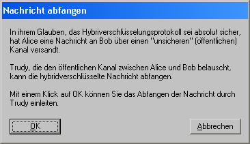

Dieser Dialog wird angezeigt, wenn Sie im Dialog für den Seitenkanalangriff auf das Hybridverschlüsselungsprotokoll die Schaltfläche Nachricht abfangen klicken.

Sobald Sie diesen Dialog über die Schaltfläche OK schliessen, wird dargestellt, wie Trudy die hybridverschlüsselte Nachricht, die Alice an Bob versandt hat, abfängt.
Bemerkung:
Das Abfangen der Nachricht stellt kein Problem dar, da die Kommunikation zwischen Alice und Bob über einen öffentlichen Kanal erfolgt, dessen Zugang nicht geschützt ist.